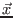
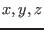
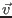
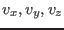
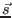
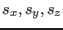
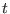

About McStas
Conditions of use
Authors/Contacts
Project funding
Screenshots
Download
Components
Linux Install (deb/rpm)
Mac OS X Install
Unix Install (src code)
Windows Install
Other Downloads (share)
Documentation
McStas manual
FAQ
Known problems
Publications
C Compilers
Other
Tools
Tutorial
Next: Exercises Up: McStas neutron ray-trace tutorial Previous: Basic understanding of instrument
Basic McStas
In short, the core of the McStas system is a precompiler. From a user-provided instrument description, components are assembled into a single piece of ansi-c code. Using a compiler, e.g. gcc, the c code is compiled into an executable program which can be run on your computer. Optionally, the program takes input arguments to tune the setup of your instrument/simulation. This section will take you through a simple example instrument to teach you the basic instrument language of McStas. (Instrument filename is vanadium_example.instr, can be loaded using theNeutron Site/Tutorial menu item of the mcgui, see below).
Please study carefully the instructive comments, marked by
/* ... */ characters
/* The line below defines the 'name' of our instrument */
/* Here, we have a single input parameter, ROT */
DEFINE INSTRUMENT vanadium_example(ROT=0)
/* The DECLARE section allows us to declare variables */
/* in c syntax. Here, coll_div (collimator divergence) */
/* is set to 60 arc minutes... */
DECLARE
%{
double coll_div = 60;
%}
/* Here comes the TRACE section, where the actual */
/* instrument is defined.... */
TRACE
/* The Arm() class component defines reference points */
/* and directions in 3D space. Every component instance*/
/* must have a unique name. Here, arm is used. This */
/* Arm() component is set to define the origin of our */
/* global coordinate system (AT (0,0,0) ABSOLUTE) */
COMPONENT arm = Arm() AT (0,0,0) ABSOLUTE
/* Next, we need some neutrons. Let's place a neutron */
/* source. Refer to documentation of Source_flat to */
/* understand the different input parameters. */
/* The source component is placed RELATIVE to the arm */
/* component, meaning that modifying the position or */
/* orientation of the arm will also affect the source */
/* component (and other components after that one...) */
COMPONENT source = Source_simple(radius = 0.015, dist = 1,
xw=0.024, yh=0.015, E0=5, dE=0.2)
AT (0,0,0) RELATIVE arm
/* Here we have a collimator - placed to improve beam */
/* divergence. The component is placed at a distance */
/* RELATIVE to a previous component... */
COMPONENT collimator = Collimator_linear(len = 0.2,
divergence = coll_div, xwidth = 0.04, yheight=0.06)
AT (0, 0, 0.4) RELATIVE arm
/* We also need something to 'shoot at' - here a sample*/
/* made from vanadium - an isotrope scatterer. Options */
/* are available to restrict the solid angle in which */
/* neutrons are emitted (no need to simulate neutrons */
/* that we know for sure will not reach the rest of */
/* instrument). */
/* Other options for smart targeting are available - */
/* refer to component documentation for info. */
COMPONENT target = V_sample(thickness = 0.004, radius = 0.012,
yheight = 0.015, focus_r = 0, pack = 1,
target_x = 0, target_y = 0, target_z = 1)
AT (0,0,1) RELATIVE arm
/* Here, a secondary arm - or reference point, placed */
/* on the sample position. The ROT parameter above */
/* defines rotation of this arm (and components */
/* relative to the arm) */
COMPONENT arm2 = Arm()
AT (0,0,0) RELATIVE target
ROTATED (0,ROT,0) relative arm
/* For data output, let us place a detector. This */
/* detector is not very realistic, since it is sphere */
/* shaped and has a 10 m radius, but has the advantage */
/* that EVERYTHING emitted from the sample will be */
/* picked up. Notice that this component changes */
/* orientation with the ROT input parameter of the */
/* instrument. */
COMPONENT PSD_4pi = PSD_monitor_4PI(radius=10, nx=101, ny=51,
filename="vanadium.psd")
AT (0,0,0) RELATIVE arm2
END
Enlightened by the above example, you are probably now ready to learn
a few more important details and tips about McStas.
- Neutron representation: A neutron 'history' or package is
an entity representing a large number of neutrons. It has the
following physical properties:
- Spatial coordinates,  or .
- Velocity components,  or .
- Spin components,  or .
- Time, .
- Neutron weight factor,
 .
.
 horisontal and pointing left, looking in
the direction of .
Component order matters! It is important to understand
that McStas is component order dependent. The basic idea is to
follow the neutron as it travels from one component to the next in
the instument description. This means that if you place one component
geometrically before another component, but orderly
after the other component, neutrons may never reach your 'first'
component. This means that some designs can be difficult to
achieve, though generally a solution can be found.
Use Arm()'s! The Arm() component is very good for defining
changed orientation of the instrument, e.g. for axis turning points
etc. Placing many Arm()'s will improve future flexibility of your
instrument.
Use PSD_monitor()'s! The PSD_monitor() component is a
Position Sensitive Detector. This component can
be used to image the shape of your beam as it travels through the
instrument. This is very useful for debugging purposes. Other
monitors, for instance wavelength monitors can also be useful.
horisontal and pointing left, looking in
the direction of .
Component order matters! It is important to understand
that McStas is component order dependent. The basic idea is to
follow the neutron as it travels from one component to the next in
the instument description. This means that if you place one component
geometrically before another component, but orderly
after the other component, neutrons may never reach your 'first'
component. This means that some designs can be difficult to
achieve, though generally a solution can be found.
Use Arm()'s! The Arm() component is very good for defining
changed orientation of the instrument, e.g. for axis turning points
etc. Placing many Arm()'s will improve future flexibility of your
instrument.
Use PSD_monitor()'s! The PSD_monitor() component is a
Position Sensitive Detector. This component can
be used to image the shape of your beam as it travels through the
instrument. This is very useful for debugging purposes. Other
monitors, for instance wavelength monitors can also be useful.
- mcstas - Core application.
- mcgui - Main graphical user interface.
- mcdisplay - Ray trace / debugging application.
- mcplot - Data / display application.
- mcdoc - Documentation application.
- To start mcgui, execute
mcguiin a terminal window (mcgui.plon Windows). - To handle instrument files (opening, editing, compiling), use
Filemenu ofmcgui. - To simulate and plot data, use the
Simulationmenu ofmcgui. - To use the distributed example McStas instruments, use the
Neutron Sitemenu ofmcgui. - For further help on usage, use the items of the
mcguimenu ofHelpmenu or read the chapter Running McStas of the McStas manual [2].
Next: Exercises Up: McStas neutron ray-trace tutorial Previous: Basic understanding of instrument Peter Kjær Willendrup 2015-11-12